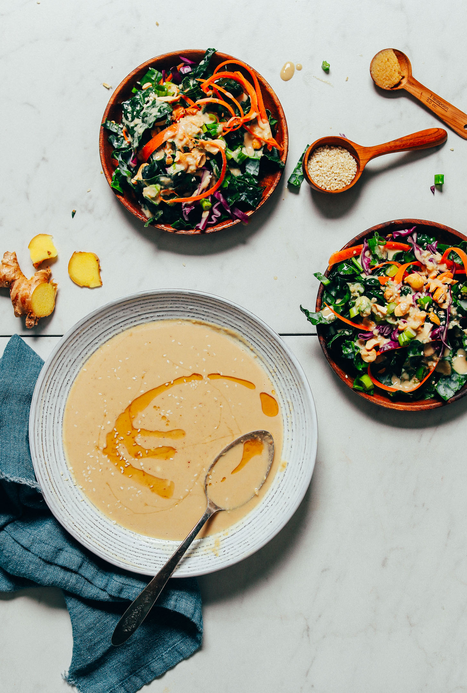

Ginger Garlic Miso Tahini Salad

Description
I discovered this recipe in San Francisco while having dinner with a good friend of mine. It's originally from the Minimalist Baker but I've given it a tiny twist. The recipe is vegan, healthy and absolutely delicious!
Ingredients
Dressing
- 1/3 cup of tahini
- 1 heaping tbsp of freshly peeled grated ginger (or very finely minced)
- 1-2 cloves of finely minced garlic (scrape garlic across the chopping board with a knife to make more of a paste for bolder flavor).
- 1 heaping tsp yellow or white miso paste
- 1 tbsp soy sauce
- 1 tbsp rice vinegar
- 1 tsp toasted or untoasted sesame oil
- 2 tsp maple syrup (plus more to taste)
- 2-3 tbsp water (plus more to taste)
Salad
- 3-4 cups of roughly chopped/ripped green kale
- 1-2 tbsp ground cumin
- 2-3 tbsp olive oil (plus more to taste)
- 1-2 tsp sesame oil (plus more to taste)
- A pinch of salt (optional)
- 1 cup of grated/ribboned carrot
- 1/2 cup of thinly sliced cucumber
- 1/2 cup of thinly sliced red cabbage
- 400g canned chickpeas (larger is better, you can add more if you like)
- 50g of roasted peanuts or cashews roughly chopped
Steps
- Turn on the oven at 180 degrees celcius and have a solid baking tray ready with a sheet of baking paper.
- Rip the kale into rough pieces (approx. 2cm pieces) onto the baking tray and lightly cover in olive oil and a bit of sesame oil and salt to taste. You might have to do this in batches to avoid overfilling the oven tray. Try to fill it up, but not pile it too high. The aim is to get crispy/crunchy kale.
- Place kale in oven for 10 minutes. Mix the kale after 10 minutes and put back in the oven. They should be crispy after 10 minutes, dark green and not black. If they are still to soft, leave in the over for a few more minutes (2-5) until crispy. Repeat this step until all of the kale has been baked. While you wait for the kale to turn crisp, follow the next steps.
- Remove all the fluids from the chickpeas and leave to dry on a towel or kitchen paper. I prefer my chickpeas extra crunchy and take off all the skins by soaking them in warm water for ~20 minutes and removing the skins before letting them dry out.
- While you leave the chickpeas to dry out as long as possible, you can let them sit while you put the batches of kale in the oven. Once the kale is done, put the chickpeas in the oven for 5 minutes.
- After 5 minutes the chickpeas should be relatively dry (if not keep them in for another 2-5 minutes), remove the chickpeas from the oven (leave the oven on) and cover in a thin layer of olive oil and cover with a large heaping of cumin (to taste).
- Mix well and spread out evenly across the oven tray and place back in oven for 10 minutes. After 10 minutes, stir the chickpeas again and place in the oven for another 10 minutes. They should be in the oven for a total of 25-30 minutes.
- While you are baking the chickpeas, cut the carrot into ribbons (you can use a julienne cutter), use a fruit peeler or cheese slicer to slice the cucumber into thin slices and thinly slice the cabbage.
- After the second 10 minutes, turn off the oven and leave them in for 10 minutes. Then open the door after 10 minutes and let them cool down. This should give you deliciously crispy and crunchy chickpeas.
- While you let the chickpeas cool down and after you have chopped the vegetables, you can make the dressing. Mix together all the ingredients and stir well.
- Serve in a wide bowl, with the kale on the bottom, the greens on top, followed by the chick peas, dressing and chopped nuts.